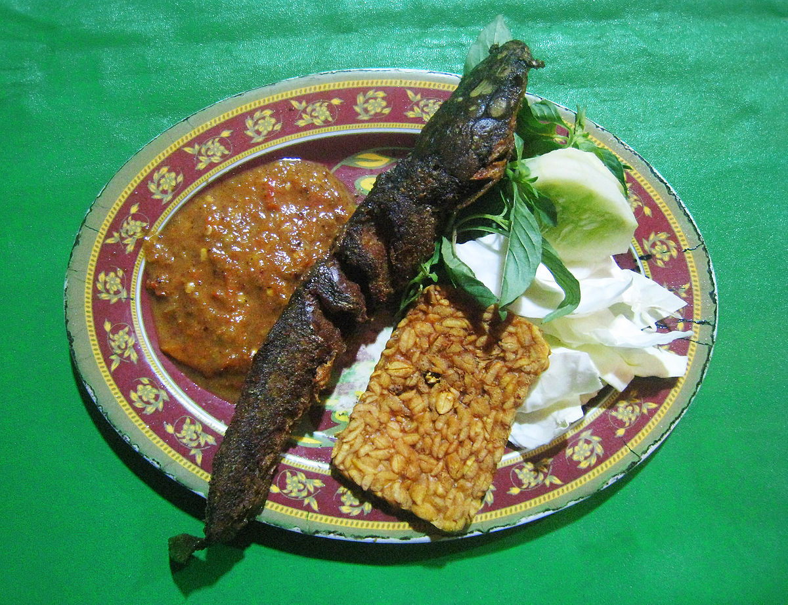

Pecel lele

Pecel Lele or Pecak lele is an Indonesian deep fried Clarias catfish dish originating from Lamongan, East Java, Indonesia.
Ingredients
- 4 catfish
- Cooking oil
- A teaspoon of turmeric (puree)
- 3 cloves of garlic (puree)
- 1 teaspoon garlic powder
- 2 tbsp lime juice
- 75 ml water
- 5 large red chilies, fried
- 10 pieces of cayenne pepper, fried
- 2 tomatoes, fried
- 4 cloves of garlic, fried
- 2 red onions, fried
- 4 pecans, fried
- 1 tsp lime juice
- 1 tsp salt
- Cucumber
- Basil leaves
- Tomatoes
Steps
- Prepare the cleaned catfish into a clean container. Soak the catfish with the marinade solution. Allow 30 minutes for the flavors to infuse.
- Heat oil, fry catfish over medium heat until cooked. Lift and drain.
- Pecel lele sauce: Combine all catfish ingredients in a mortar. Knead until it feels soft.
- Serving: Arrange catfish, white rice, pecel catfish sauce, and fresh vegetables. Serve and enjoy while still hot.